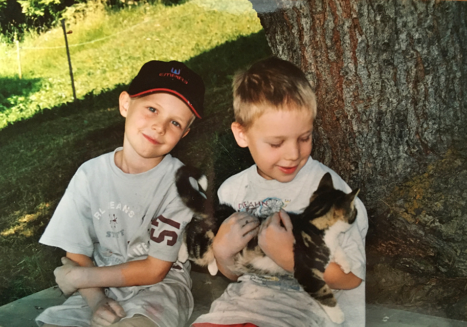

Über mich
In meiner Herkunftsfamilie war Musik unsere meist gelebte Form der Kommunikation. So wurden Klänge zu meiner Sprache. Bis heute bin ich fasziniert von ihrer Schönheit und Ausdrucksfähigkeit.
Verschiedene Schicksalsschläge in meiner frühen Kindheit hinterliessen in mir grosse Traurigkeit und tiefe Einsamkeitsgefühle. Sinnfragen gehörten für mich - seit ich mich erinnern kann - zu meinem Leben dazu. Die Frage nach Gott und meine Sehnsucht nach Heilung führten mich in ein christliches Umfeld, das wenig Spielraum für Persönlichkeitsentfaltung zuliess.
Die Geburten meiner beiden Söhne war ein wichtiger Wendepunkt. Berührt von dieser reinen Liebe erahnte ich, dass die Liebe des Göttlichen weitaus umfassender sein muss, als mir bis dahin bewusst war. Schritt für Schritt löste ich mich aus starren Strukturen, öffnete mich für die Fülle des Universums und begann mein Potential zu entfalten.
Auf meinem inneren Heilungsweg fand ich Frieden und versöhnte mich mit meiner Vergangenheit. Der Reichtum an vielfältigen Erfahrungen ist ein wertvoller Schatz, den ich jetzt in meine Heilungsarbeit einfliessen lasse.
Liebe und Verbundenheit zu erfahren und zu leben, dazu möchte ich die Menschen inspirieren - liebevoll, empathisch, kreativ und musikalisch.
Lisa
In Kürze
-
Kindheit
Meine musikalische Karriere begann wie damals üblich mit der Blockflöte. Seit der ersten Klasse spiele ich Klavier, in der dritten kam das Cello dazu.
-
Jugend
Während der Oberstufe habe ich mir im Selbststudium Gitarre spielen beigebracht. Vielseitige Band- und Orchestererfahrung sowie Inszenierung und Leitung von Musicals.
-
Berufsleben
Mit viel Freude übte ich während sechs Jahren meinen Erstberuf als Primarlehrerin aus. Nebenbei erweiterte ich meinen Horizont mit Reisen rund um den Globus.
-
Familie

Das grösste Geschenk war die Geburt unserer Söhne Hannes und Florian. Neben meiner Rolle als Mutter absolvierte ich die Ausbildung in Bewegung, Atmung und Entspannung und arbeitete Teilzeit als Gymnastiklehrerin.
-
Selbständigkeit
Nach diversen Weiterbildungen im Bereich Persönlichkeitsentwicklung im In- und Ausland erfüllte ich mir den Traum der Selbständigkeit mit Klangheilung und ThetaHealing. Mit grosser Begeisterung teile ich meine Erfahrungen und mein Wissen.
Meine ThetaHealing Ausbildungen
Anwenderkurse
Basis DNA
Aufbau DNA
Grabe Tiefer
Du und der Schöpfer
Du und dein innerer Kreis
Du und dein Lebenspartner
Du und die Erde
Manifestieren und Fülle
Intuitive Anatomie
Kranheiten und Beschwerden
Spiel des Lebens
DNA 3
Ebenen der Existenz
Rhythm - Zum perfekten Gewicht
Seelenpartner
Regenbogenkinder
Familienverbindungen
Weltenbeziehungen
Vergebung, Liebe, Kraft
Befreie dich von Abhängigkeiten
Wohlstandsbewusstsein
Der Körper singt
Hormon Symphonie
Lehrerkurse
Basis DNA
Aufbau DNA
Grabe Tiefer
Du und der Schöpfer
Du und dein innerer Kreis
Du und dein Lebenspartner
Du und die Erde
Manifestieren und Fülle
Weltenbeziehungen
Regenbogenkinder